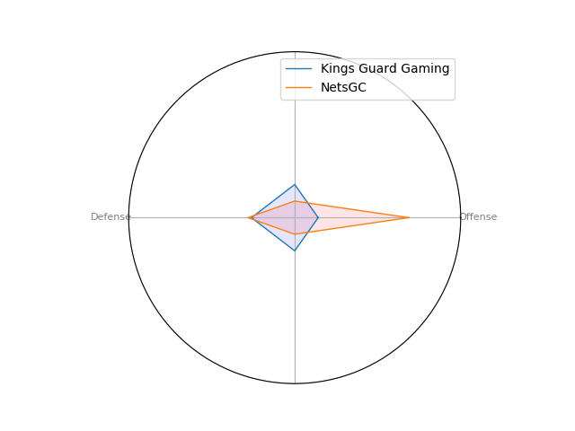
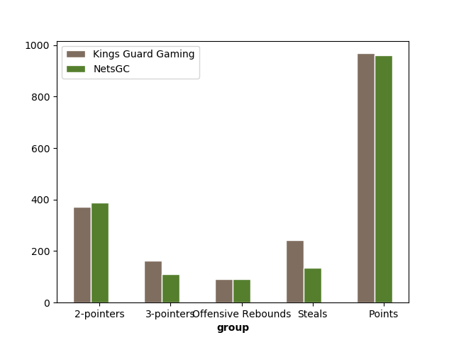
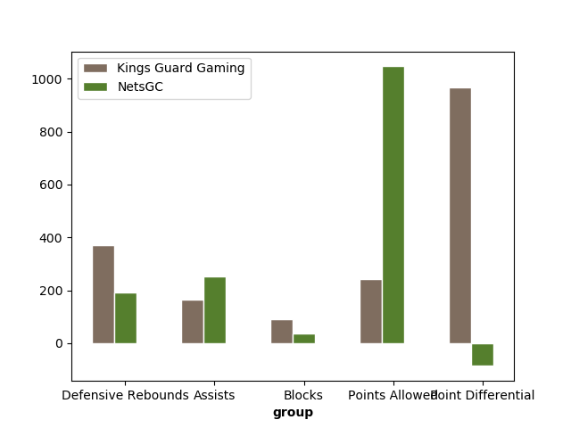

Data Analytics and Statistics for the 2019 NBA 2K League
Data visualization and analysis of offense, defense, and player capability
Overview
Analyzing basketball statistics can be tiresome and frustrating. Our team aims to
alleviate the chore of data analysis by applying visualization in order to maximize
team efficiency, player utility, and the best archetypal fit for each player.
The following represents a small dataset over a single season. More accurate
results can be obtained with more data and better refinement.
Kings versus Blazer5 Gaming
Blazer5 Gaming's team excels at offense and narrowly beats out the Kings on defense.
Their primary scoring method is 2-point shots and they excel at offensive rebounds.

Blazer5 is noticeably weak at blocking shots and defensive rebounds.
Pushing hard on offense is the key to beating them.


Kings versus 76ers GC
76ers GC is somewhat stronger than the Kings on both offense and defense.
Their primary scoring method is 2-point shots, and they focus just as hard on 3-point shots.

76ers GC is noticeably weak at blocking shots and tends to allow a lot of points, although they
make up for this by scoring just as many. Blocking their assists is something to focus on.


Kings versus Celtics Crossover Gaming
Celtics Crossover Gaming is stronger than the Kings on offense, but closer in terms of defense.
They tend to make many 3-point shots, about as many as the Kings do.

Celtics Crossover Gaming has strong assists, but they tend to allow a lot of shots.
Pushing the offensive us the best way to beat them.


Kings versus Grizz Gaming
Grizz Gaming is about equal to the Kings in terms of defense. They make a lot of
2-point shots, but hardly make any 3-point shots.

Judging by the high number of assists and low number of 3-point shots, Grizz Gaming
tries to play things safely. Pushing on the offensive may catch them off-guard.


Kings versus T-Wolves Gaming
T-Wolves Gaming is about equal to the Kings in terms of defense.
Both teams also have a roughly equal number of offensive rebounds.

T-Wolves Gaming has an extraordinarily low number of blocked shots.
Taking advantage of this by attempting more 2- and 3-point shots would
be a good strategy.


Kings versus Bucks Gaming
Bucks Gaming features a slightly higher defensive capability than the Kings,
focusing on 2-point shots over 3-point shots.

Bucks Gaming has an extraordinarily low number of blocked shots.
Taking advantage of this by attempting more 2- and 3-point shots would
be a good strategy.


Kings versus Magic Gaming
Magic Gaming has about equal defensive capabilities compared to the Kings.

Bucks Gaming has an extraordinarily low number of blocked shots
and a very low number of steals. As a result, Recommended strategies
involve remaining close to opposing team members to decrease their
possession count.


Kings versus Pacers Gaming
Pacers Gaming has about equal defensive capabilities compared to the Kings.

Pacers Gaming has an extraordinarily low number of blocked shots
and a very low number of steals. As a result, Recommended strategies
involve remaining close to opposing team members to decrease their
possession count.


Kings versus Mavs Gaming
Mavs Gaming has about equal defensive capabilities compared to the Kings.

Mavs Gaming has an extraordinarily low number of blocked shots
and a very low number of steals. As a result, Recommended strategies
involve remaining close to opposing team members to decrease their
possession count.


Kings versus Wizards District Gaming
Wizards District Gaming has about equal defensive capabilities compared to the Kings.

Wizards District Gaming has an extraordinarily low number of blocked shots
and a very low number of steals. As a result, Recommended strategies
involve remaining close to opposing team members to decrease their
possession count.


Kings versus Warriors Gaming Squad
Warriors Gaming Squad has about equal defensive capabilities compared to the Kings.

Warriors Gaming Squad has an extraordinarily low number of blocked shots
and a very low number of steals. As a result, Recommended strategies
involve remaining close to opposing team members to decrease their
possession count.


Kings versus Jazz Gaming
Jazz Gaming has about equal defensive capabilities compared to the Kings.

Jazz Gaming has an extraordinarily low number of blocked shots
and a very low number of steals. As a result, Recommended strategies
involve remaining close to opposing team members to decrease their
possession count.


Kings versus Raptors Uprising GC
Raptors Uprising GC has about equal defensive capabilities compared to the Kings.

Raptors Uprising GC has an extraordinarily low number of blocked shots
and a very low number of steals. As a result, Recommended strategies
involve remaining close to opposing team members to decrease their
possession count.


Kings versus Cavs Legion GC
Cavs Legion GC has about equal defensive capabilities compared to the Kings.

Cavs Legion GC has an extraordinarily low number of blocked shots
and a very low number of steals. As a result, Recommended strategies
involve remaining close to opposing team members to decrease their
possession count.


Kings versus Heat Check Gaming
Heat Check Gaming has about equal defensive capabilities compared to the Kings.

Heat Check Gaming has an extraordinarily low number of blocked shots
and a very low number of steals. As a result, Recommended strategies
involve remaining close to opposing team members to decrease their
possession count.


Kings versus NetsGC
NetsGC has about equal defensive capabilities compared to the Kings.

NetsGC has an extraordinarily low number of blocked shots
and a very low number of steals. As a result, Recommended strategies
involve remaining close to opposing team members to decrease their
possession count.

Kings versus Knicks Gaming
Knicks Gaming has about equal defensive capabilities compared to the Kings.

Knicks Gaming has an extraordinarily low number of blocked shots
and a very low number of steals. As a result, Recommended strategies
involve remaining close to opposing team members to decrease their
possession count.


Kings versus Hawks Talon GC
Hawks Talon GC has about equal defensive capabilities compared to the Kings.

Hawks Talon GC has an extraordinarily low number of blocked shots
and a very low number of steals. As a result, Recommended strategies
involve remaining close to opposing team members to decrease their
possession count.


Kings versus Lakers Gaming
Lakers Gaming has about equal defensive capabilities compared to the Kings.

Lakers Gaming has an extraordinarily low number of blocked shots
and a very low number of steals. As a result, Recommended strategies
involve remaining close to opposing team members to decrease their
possession count.


Kings versus Pistons GT
Pistons GT has about equal defensive capabilities compared to the Kings.

Pistons GT has an extraordinarily low number of blocked shots
and a very low number of steals. As a result, Recommended strategies
involve remaining close to opposing team members to decrease their
possession count.


Conclusion
Teams facing the Kings primarily focused on scoring 2-point shots while neglecting their blocking and defense. Likewise,
the kings themselves have a defensive capability well within the range of other teams. The Kings defense needs no improvement.
However, taking a more offense-focused stance would greatly benefit the Kings in future matches.
In addition, the Kings had a large number of 3-point shots compared to other teams 2-point shots.
It may be wise to focus on getting closer to the opponent's goal before taking the shots.
Because the Kings have a fairly large number of assists across games, they should
take advantage of their ability to work together and push inwards towards the goal.